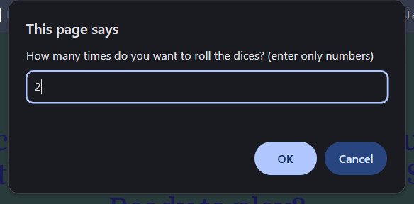
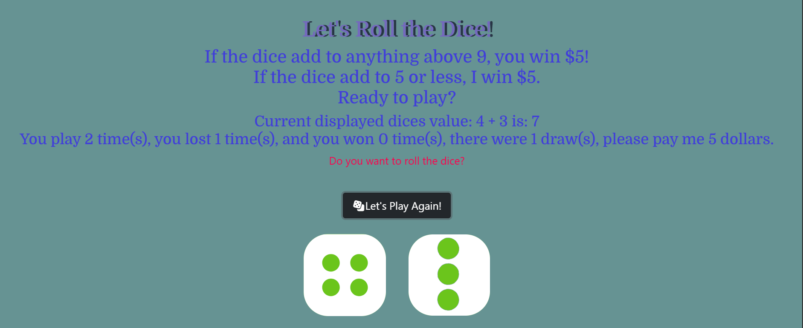

Dice Game

This is a dice html website that I created for COGS 3 class. The site allows the users to play a dice game, which the user choose to roll the dice whatever times they want, and each round, if the numbers on the two dice add up to anything above 9, the user wins $5, but if the two dices' numbers add up to 5 or less, the user lost $5, and any results between 5 and 9 considers a draw which the user don't lost or gain anything.
The user plays the game by clicking the button that says "Lets Play Again!". The site will prompt the user to enter the number of times the user want to play. I added icons and edited the colors of the background and button to make the site more unique and complex.
After the user enters a valid number, the site will generate the results and display the final results, showing how much did the user wins, loses, and how many draws does the user get.